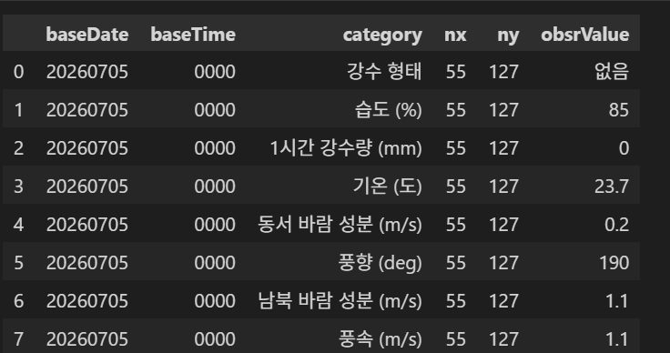
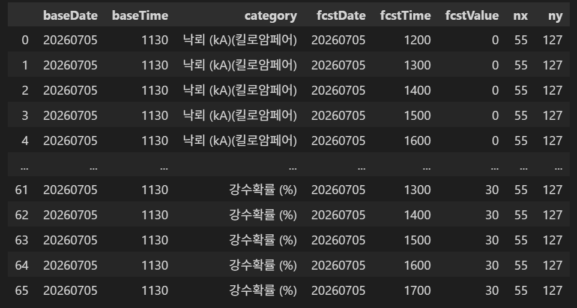
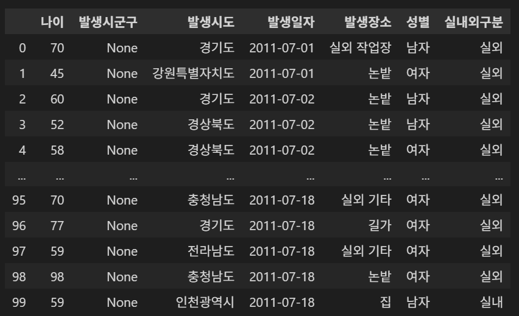

기상·인구·공간·사고 발생 데이터를 활용한 공공기관용 위험지역 분석 서비스
열사병, 저체온증·동상, 감전·낙상, 폐렴처럼 기후와 날씨의 영향을 받는 사고가 반복됩니다.
야외 노동자, 노숙자, 고령자, 저연령층처럼 환경 변화에 크게 노출되는 사람들입니다.
인프라가 있어도 사고가 지속되고, 행정상 포착하기 어려운 취약계층이 존재하며 지원은 비용 중심으로 치우쳐 있습니다.
기후·환경 위험을 알리는 데서 끝나지 않고, 기존 정책과 인프라로 해결되지 않는 원인을 분석해 비금전적 대응 방안까지 제시합니다.


연령 구간별 독거노인 수와 시도 경계 Polygon을 확인했습니다.

유지보수와 개발이 용이하고, SPA·SSR·CSR·SSG 등 다양한 렌더링 방식을 상황에 맞게 적용할 수 있습니다.
SPA 중심 구성은 초기 로딩이 느려질 수 있어 이번 서비스에서는 채택하지 않습니다.
좋은 대안이지만 팀의 React 선택과 생태계가 다릅니다.
Python 분석 코드 연계, 타입 기반 API, 비동기 데이터 수집에 적합합니다.
단순하지만 인증·문서·구조를 별도로 조합해야 합니다.
관리자와 ORM은 강력하지만 현재 API 중심 MVP에는 범위가 큽니다.
프론트·API·DB의 실행 환경을 동일하게 맞춥니다.
계산이 가벼운 위험도는 FastAPI에서 즉시 반환합니다.
장시간 학습·추론이 생기면 워커와 Redis 큐를 분리합니다.
오토스케일링은 가능하지만 해커톤 범위에는 운영 복잡도가 큽니다.
사용자·정책 같은 관계형 데이터와 공간 질의를 함께 처리합니다.
문서 의미 검색이 핵심이 될 때 추가합니다.
유연한 문서 저장보다 현재는 관계·공간 정합성이 중요합니다.
대규모 전문 검색과 로그 분석 요구가 생길 때 도입합니다.
감사합니다.